QGIS AT A GLANCE
- 🌍 Used by millions worldwide — across cities, forests, disaster zones, farms, …
- 💻 Runs on Linux, Windows, macOS — and Android, iOS via apps
- 🗣️ Available in 100+ languages thanks to our global community
- 🔁 Updated every 4 months with regular releases
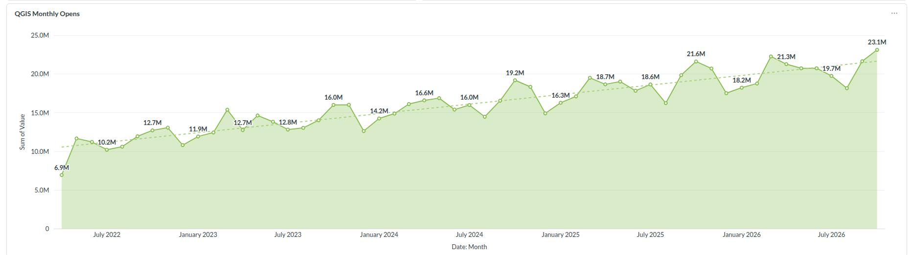
QGIS IS A DIGITAL PUBLIC GOOD
- ✅ Officially recognized by the Digital Public Goods Alliance in 2025
- 🎯 Meets DPG standards: open-source, privacy-respecting, inclusive, and aligned with the UN Sustainable Development Goals (SDGs)
- 🌱 Supports global causes: climate action, urban planning, disaster response, public health
- 🧩 Strengthens QGIS’ role in international cooperation — especially with governments, NGOs, and educational institutions
- 🙌 Reinforces our commitment to building digital infrastructure that’s open, accessible, and ethical
COMMUNITY FIRST
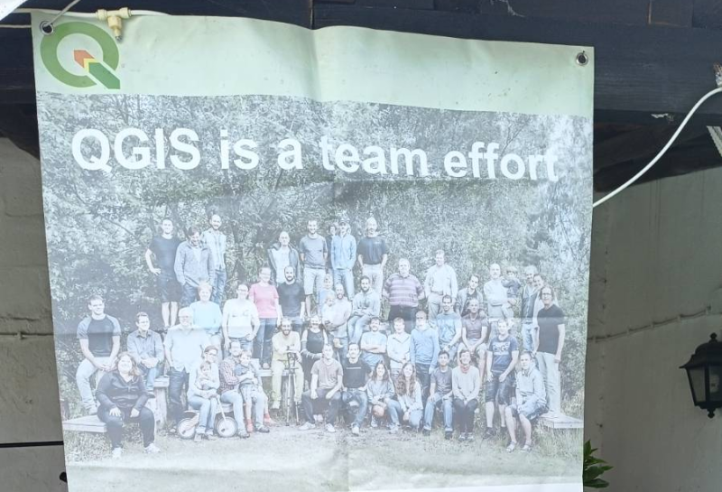
PROFESSIONAL USAGE
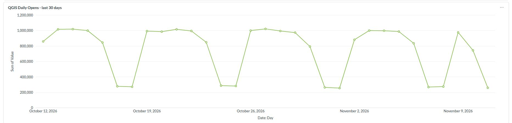
Just finished, and I’m still chair 😅
- 👋 2 new members: Jana and Raymond
- ✅ All motions passed:
- Double voting prevention: 50 yes, 1 no, 2 abstain
- Recovery of voting member status after PSC service: 46 yes, 1 no, 6 abstain
- More transparency in the PSC’s financial decisions: 49 yes, 4 abstain
HOW IS QGIS SUSTAINED?
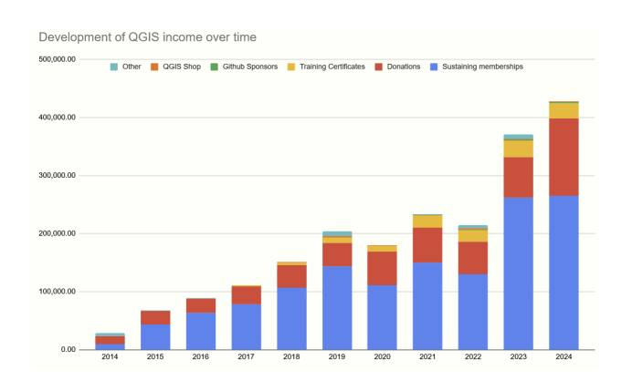
FINANCIAL GROWTH & TRANSPARENCY
But it’s not just about growth — it’s about how we use it.
- Bug fixing is our largest single allocation — this keeps QGIS stable and production-ready
- Infrastructure (build systems, servers, packaging) ensures we scale reliably
- Documentation gets a dedicated budget and full-time writers
- And then there’s the Grant Programme, supporting community-driven innovation
All of it is published publicly in our financial reports.
BUDGET 2026: €634,000
- 🐛 Bug fixing: €165,000 (three rounds of €55,000)
- 📚 Documentation: €68,000
- 📊 Attribute table and large-table performance: €60,000
- 🔍 Pull request review: €40,000
- 💡 Grants: €40,000
- 🧾 First paid admin role in the project’s history: €30,000
- 📦 Packaging and upstream libraries: €25,000 each
- 🔐 Security: €10,000
GRANT PROGRAM 2026
- 💡 Direct investment in our community
- 💶 €40,000 in the 2026 budget, flat for years, and growing it is a priority
- 🧱 Supports core foundations: not flashy, but essential
- 🚀 Adds innovation and responsiveness on top of ongoing work
- 🤝 Powered by the community — for the community
WHO SUSTAINS? 💚
Også kjent som Q-GID programmet 😉
- 138 sustaining members worldwide
- Flagship, €27,000+: federal agencies, companies over 100 staff
- Large, €9,000+: larger cities, provinces, companies up to 100 staff
- Medium, €3,000+: universities, medium cities, companies up to 50 staff
- Small, €500+: smaller cities, companies up to 10 staff
USER GROUPS LEAD THE WAY
Half of the 12 Flagship and Large members are national QGIS user groups
- Flagship: 🇩🇰 Denmark, 🇸🇪 Sweden
- Large: France, Germany, Netherlands, Switzerland
- Medium: 🇳🇴 Norway, Poland, Spain
- Small: Slovakia
THE NORDIC LEAGUE TABLE
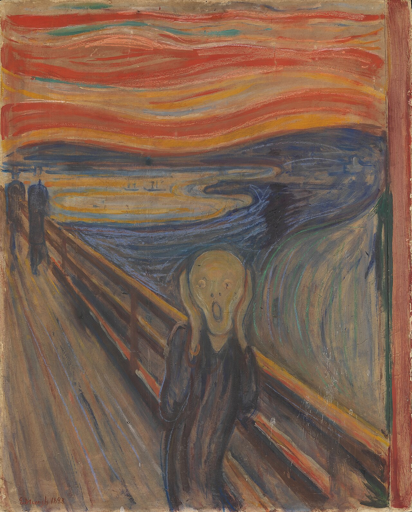
- Sweden: Flagship, 3 members on the list
- Denmark: Flagship, 4 members on the list
- Finland: Flagship, through COSS
- Norway: Medium, 1 member on the list
One Danish municipality, Syddjurs, is in the same tier as all of Norway.
HEIA NORGE!
- Medium starts at €3,000, Large at €9,000
- That difference is 12 organisations giving €500 each
- Sweden does it with 97 organisations paying 2,500 kr a year, or 10,000 kr as gold members
- Support QGIS Norge, or become a member directly
- Ask your kommune or employer what QGIS saves you every year
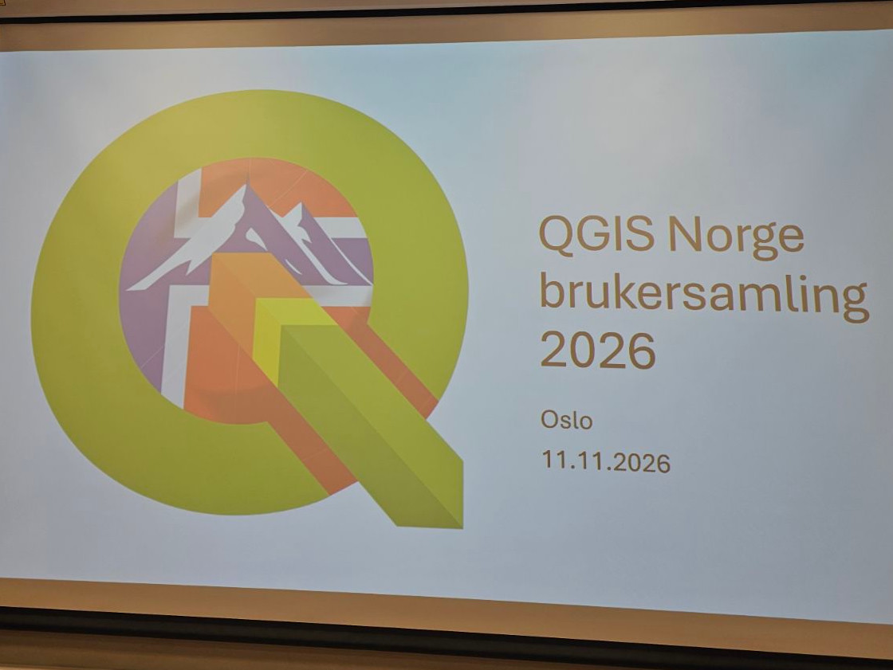
CONTRIBUTORS SECTION
ORGANISATIONS
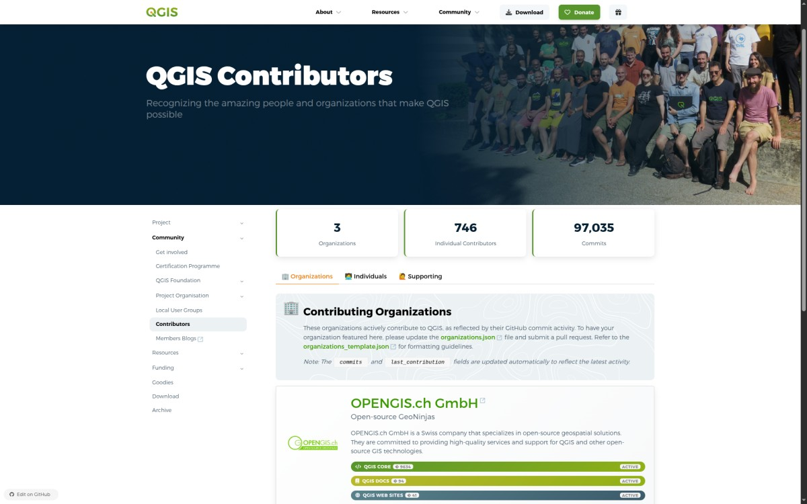
CONTRIBUTORS SECTION
INDIVIDUALS
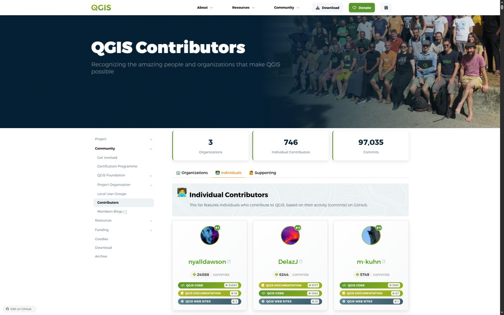
QT6
Transitions to Qt6, the modern application framework that QGIS is built on.
- Security improvements
- Modern codebase with simplified maintenance
- Updated dependencies
QGIS 4.4 LTR
- Blocker fixing mode: 1 critical blocker left
- 4.4 is the next LTR, starting with 4.4.4, planned for 5 March 2027
- 3.44 stays the LTR until then
- The LTR after that is 4.8, from October 2027
The message: we moved the date rather than ship an LTR we don’t trust.
GETTING TO A STABLE LTR
- New “LTR 4.x Blocker” tag for issues that must be fixed
- Feature freeze stays until all blockers are cleared
- Paid bug fixing for 4.4 goes from 4 to 6 weeks
- Broken features may be disabled, and listed in the changelog
- Last resort: extend the release
Your part: test 4.4 with your own projects and plugins, and report what breaks.
LOOKING AHEAD
So what’s next?
We’re not just thinking about patches and features — we’re thinking long-term strategy:
- A more cohesive documentation experience
- A language that can speak to big organisations decision makers
- Secure, modern packages for every platform
- Smarter build pipelines (trying to reduce energy consumption if possible)
- And a community that stays open, welcoming, and global
MACOS PACKAGE IMPROVEMENTS
- Done: official QGIS installers for macOS are now signed and notarised
This brings us closer to a seamless, professional user experience across all major platforms.
ATTRIBUTE TABLE QUO VADIS?
- €60,000 set aside in the 2026 budget
- Project kicked off: major rework planned for QGIS 4.8 (possibly 4.6)
- Long-standing pain point finally being addressed
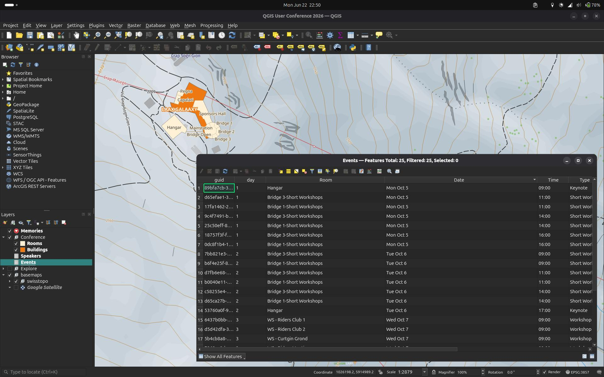
QGIS NEWS FEED NOW LOCALIZED
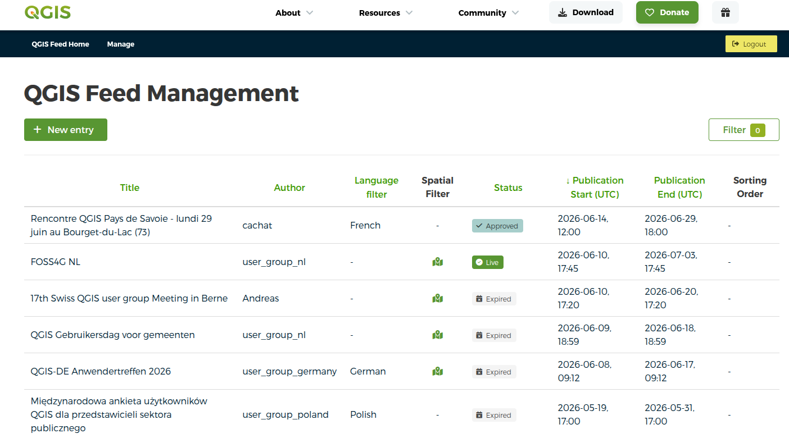
CURRENT INITIATIVES
- Vision & Mission statements: Tim & Marco, focusing on getting a clear messaging out
- Hiring more staff: from 2027, 1 FTE on administration and secretariat, and more FTEs on security reporting
- Security Initiative: Led by Oslandia and OPENGIS.ch, focusing on hardening the platform and improving secure development practices
QGIS UC 2026: LAAX
- 🌍 420+ people, 30+ countries, five continents
- 🎤 About 90 talks, 6 keynotes, 12 short workshops
- 🛠️ 10 full-day workshops, 120 participants
- 📍 QField Day: 71 people mapping Laax
- 💻 The 29th QGIS Contributor Meeting
- 🏔️ Largest event ever on Crap Sogn Gion, 2,222 m
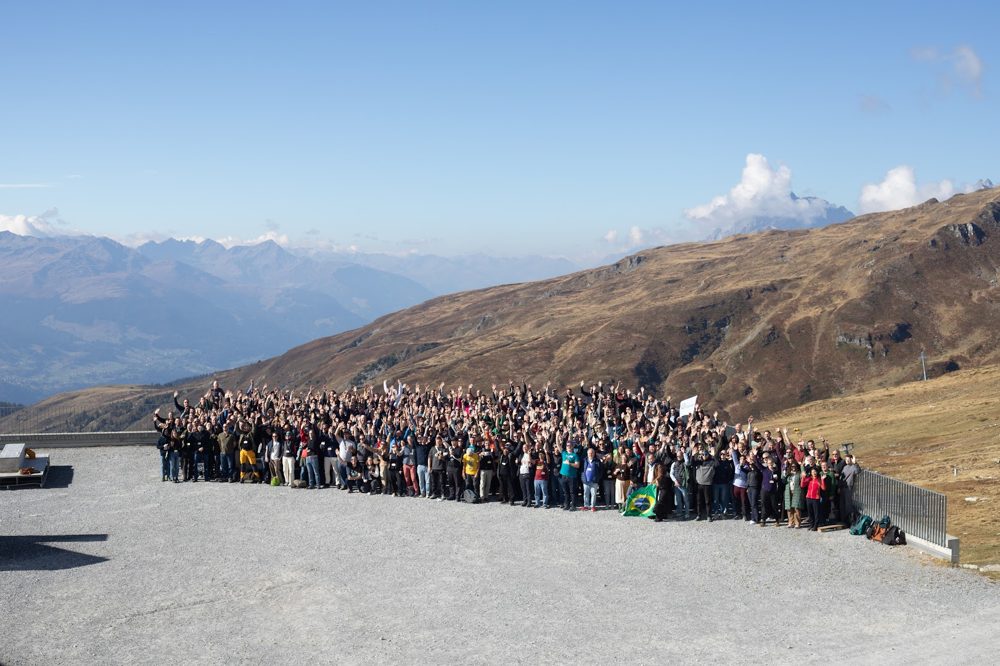
LAAX: INSIDE AND OUT
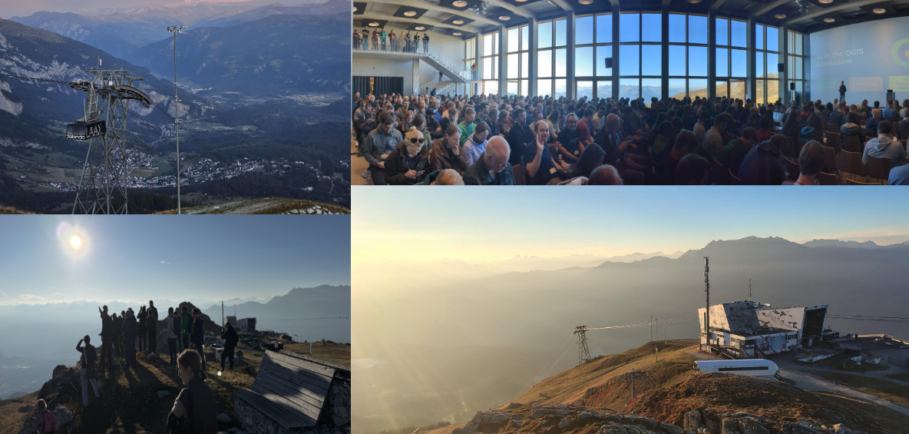
AI: THE ISSUES WE HAVE
- 🌊 More AI pull requests than humans can seriously review
- 🏷️ 60 PRs labelled AI assisted: 50 closed unmerged, 10 merged
- 😮💨 Unbearable pressure on maintainers, and we have lost a very valuable contributor
- 🤝 Broken trust: a PR used to mean "I know what I'm doing"
- 🎓 People who lean on AI learn little, and never become reviewers
- 🔐 Security advisories submitted to us: 100% written with AI
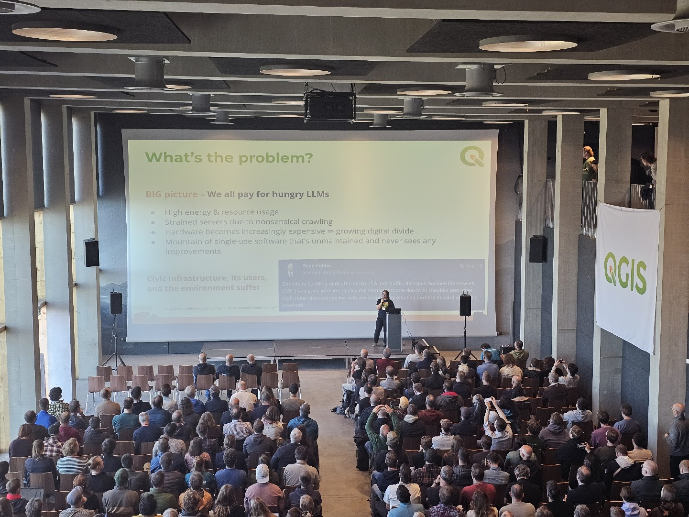
AI: WHAT WE DID ABOUT IT
- 🚧 January: “human in the loop” policy (QEP 408), which did not work in practice
- 🚪 October: no AI-assisted code in QGIS (QEP 428)
- ✋ November: no AI-written text across the project (QEP 430)
- 🤔 Still open: an exception for trusted contributors (QEP 429)
- 🕵️ A ban is hard to enforce, and can also block useful review and audit work
A closed door for now: we can open it later, case by case.
QGIS IN THE REAL WORLD
- 🌲 NIBIO, Norway: maps forests, wetlands, soil and pastures, with QGIS since 2008 and QField since around 2019
- 🗺️ National Land Survey of Finland: national topographic production on QGIS and QField, for 100 to 150 operators
- 🪨 Terrane Geoscience: bedrock geological mapping in QField, with data cleaned and verified in QGIS
- 🐟 CPAWS Southern Alberta, Canada: mapping critical native trout habitat offline with QField, without licence fees
NATIONAL AGENCIES
Norway’s NIBIO and Finland’s land survey are not alone
- Denmark, Nature Agency: QGIS inside forestry machines, with its own plugins showing nest trees and ancient monuments
- Denmark, Agency for Climate Data: publishes its own QGIS plugin for national maps, elevation and cadastre
- Sweden: Lantmäteriet, SMHI, Statistics Sweden and three more national agencies are members of QGIS Sverige
Exploring QGIS? Your counterparts are already there.
BIG GOVERNMENT USERS
- Swiss Armed Forces and swisstopo: KADAS, the army’s standard map application, is built on QGIS and is open source
- Bavaria, environmental administration: QGIS becoming the standard desktop GIS, replacing proprietary systems to reduce vendor dependency
- State of Vorarlberg, Austria: moved its administration’s desktop GIS to QGIS, and is now a Large sustaining member
- Regionalverband Ruhr, Germany: QGIS as standard GIS, and encouraging its member municipalities to adopt it
DENMARK: KOMMUNER
Kommuner with QGIS as their primary desktop GIS
2020: 37% → 2022: 46% → 2024: 56% → 2026: 65%
- Used in practically every kommune in the country
- Hjørring: simple models to geocode citizens, road gullies and soil contamination
- Aabenraa: plugin for digital signage plans for roadworks and events
- Middelfart: plugin to estimate the CO2 impact of local plans at an early stage
- Four kommuner: shared tools for operations and inspection, on PostgreSQL and QGIS
SWEDEN AND BEYOND
- Sweden: 54 kommuner and 5 regions in QGIS Sverige, including Stockholm, Göteborg and Malmö
- City of Frankfurt, Germany: paid for a lot of QGIS 3D work, including categorised 3D symbols and STL export
- Public bodies funding QGIS directly: Land Vorarlberg (Austria), Syddjurs (Denmark), Västra Götaland (Sweden), City of Canning (Australia)
Start small, share what you build, and fund what you depend on.
Min favoritt!?
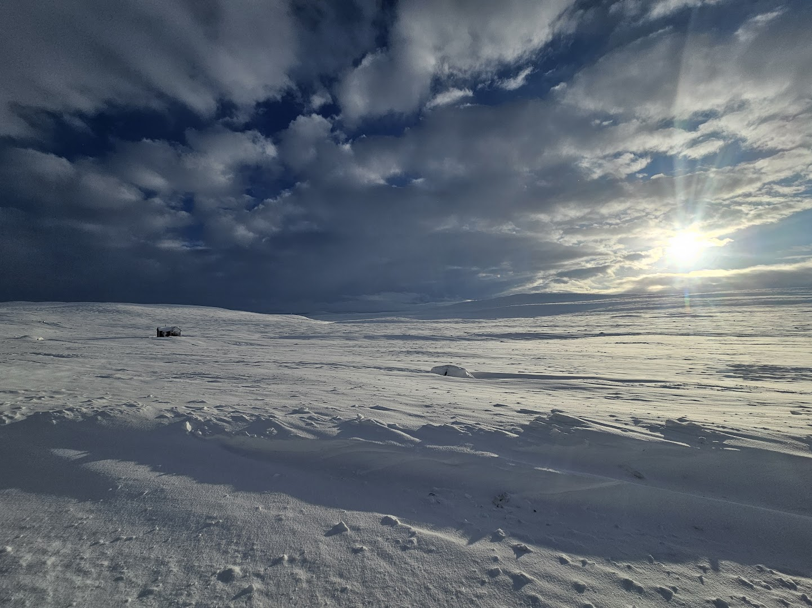
QFIELD!
THE APP THAT MAPS YOUR WORLD
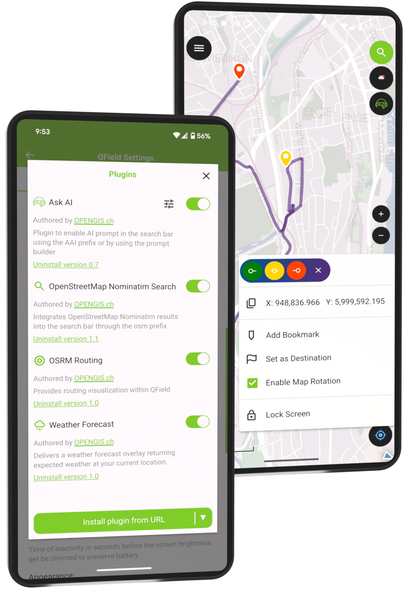
WHERE ARE WE?
4.3 Danube
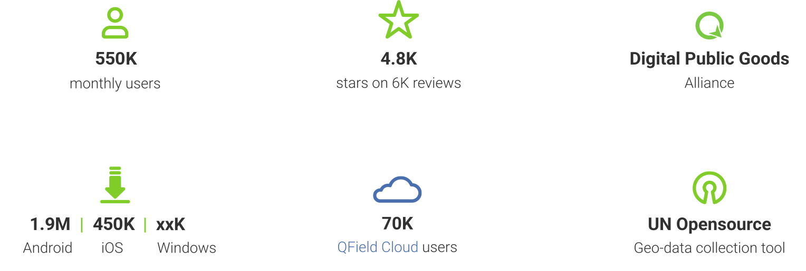
ZERO TO FIELD-READY
QField 4.0: create a project on the fly, right on the device
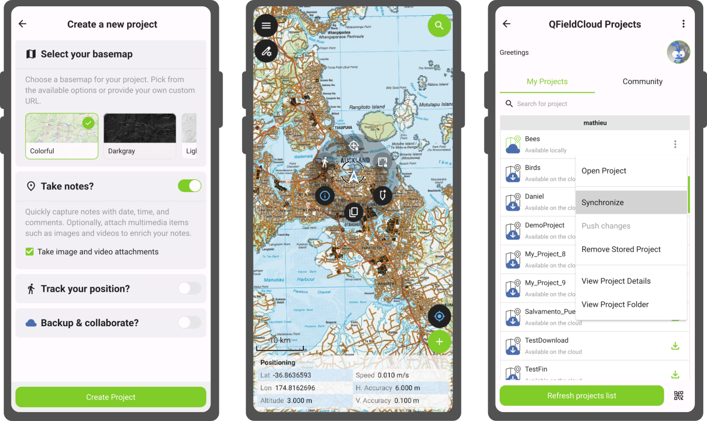
3D GIS IN YOUR POCKET
QField 4.1: terrain, basemap and live position. Offline too.
COGO
ON YOUR DEVICE
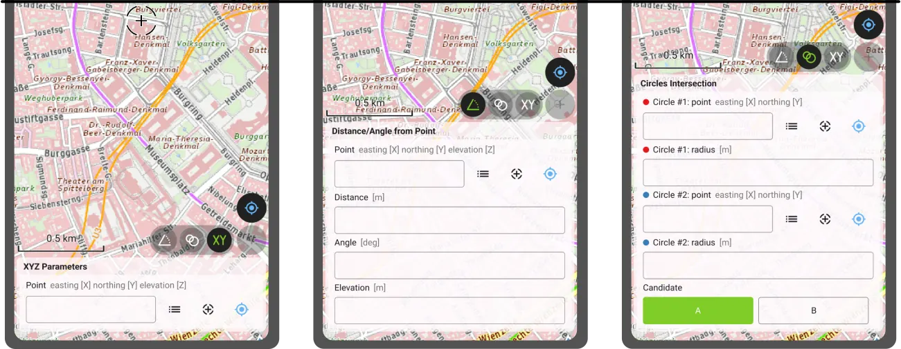
CENTIMETRE ACCURACY
QField 4.2: NTRIP corrections built in, no third-party app
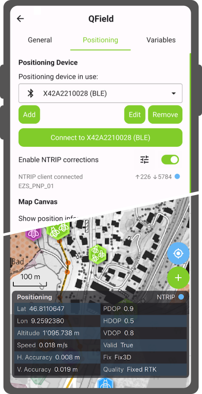
COMING NEXT
MARKUP COLLECTIONS
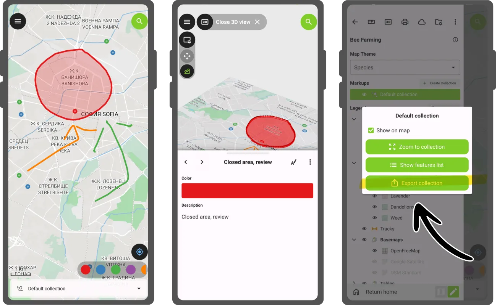
COMING NEXT
PICK YOUR LAYER
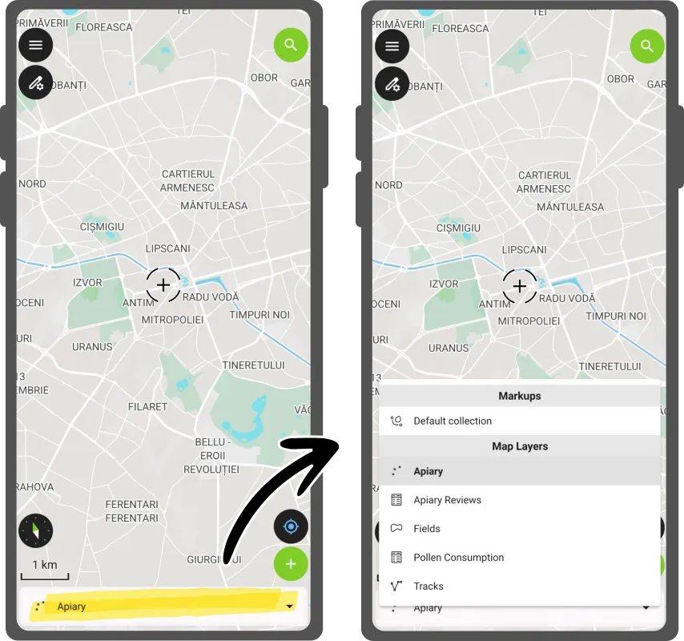
OUTLOOK WHAT’S CURRENTLY IN OUR PIPELINE
Coming in December:
- Switch layer to edit without need to open the legend
- Markups / annotations
- Georeferenced video capture (subtitle)
- QFieldCloud improvements (e.g. in-app registration)
Coming later:
- AR through camera
- Digitizing within the 3D map view
- Point cloud rendering in 3D
- Routing
- QGIS Network Analysis support (basic offline routing on line vector layer)
- Valhalla support (powerful offline routing)
- Drag-and-Drop project creation in QFieldCloud
- Publication of projects on the web